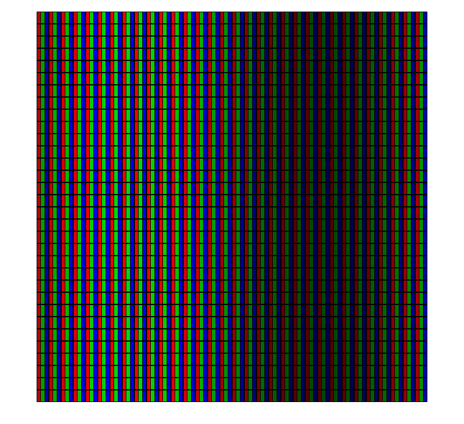
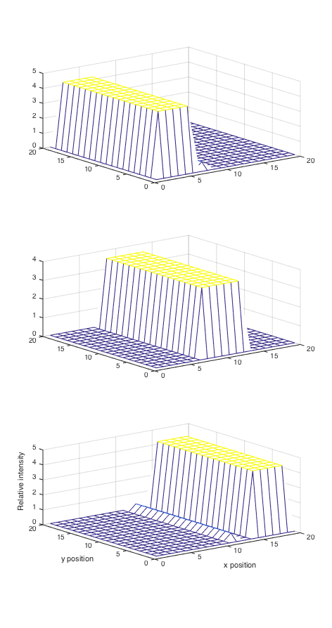
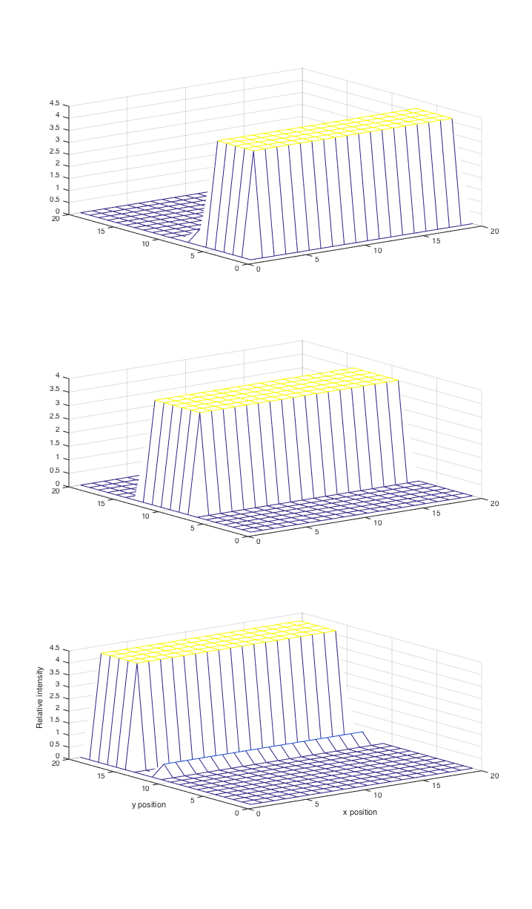
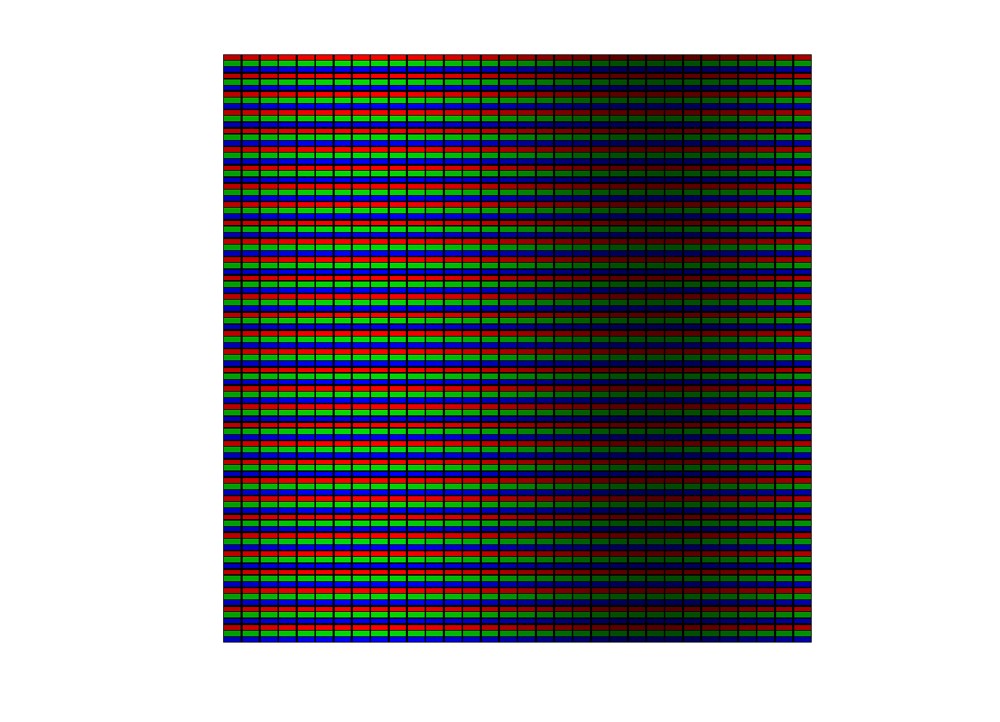
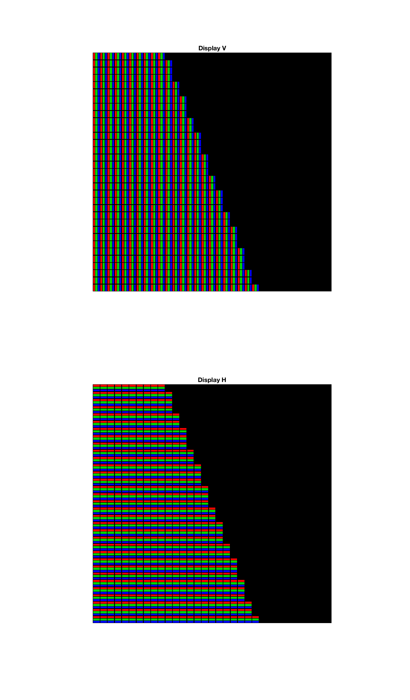

t_displayPSF
HJ is updating the display structure calls to account for display point spread functions. The purpose of the updated structures is to allow us to have more spatially accurate descriptions of the display spectral radiance.
This script is a includes material about the PSF calculations in the new display structure.
NOTES: 1) Broken becuase ISETBIO's displayGet does not (yet) have a psf method.
(BW) May 2014
Contents
Init
ieInit
Make a harmonic image for a display with a psf
x = 1:32; % Spatial samples A = 0.25; % Harmonic amplitude M = 0.5; % Mean level I = A*sin(2*pi*x/max(x)) + M; I = repmat(I,max(x),1); [outImage, d] = displayCompute('LCD-Apple', I); vcNewGraphWin; imagescRGB(outImage);
Show the display point spread functions (psfs)
psfs = displayGet(d,'dixel intensity map'); vcNewGraphWin([],'tall'); for ii=1:3, subplot(3,1,ii), mesh(psfs(:,:,ii)); end xlabel('x position'); ylabel('y position') zlabel('Relative intensity'); % We need to explain the scaling and resampling of the psfs % The values are carefully set up to preserve the units. Further % documentation is needed. Note that the sum is xSize*ySize. % When we change the spatial sampling, these functions change amplitude as % well so that the units work out right. % sum(sum(psfs(:,:,1)))
Now, replace the psfs with a different shape
for ii=1:3 psfs(:,:,ii) = psfs(:,:,ii)'; end d2 = displaySet(d,'dixel intensity map',psfs); psfs = displayGet(d2,'dixel intensity map'); vcNewGraphWin([],'tall'); for ii=1:3, subplot(3,1,ii), mesh(psfs(:,:,ii)); end xlabel('x position'); ylabel('y position') zlabel('Relative intensity');
Display the same scene, but with a different psf for the display
outImage = displayCompute(d2, I); vcNewGraphWin; imagescRGB(outImage);
Now do a similar calculation using some of the ISET tools
imSize = [32 32]; scene = sceneCreate('slanted bar',imSize); I = sceneGet(scene,'rgb'); vcNewGraphWin([],'tall'); subplot(2,1,1), imagescRGB(displayCompute(d, I)); title('Display V'); subplot(2,1,2), imagescRGB(displayCompute(d2, I)); title('Display H')